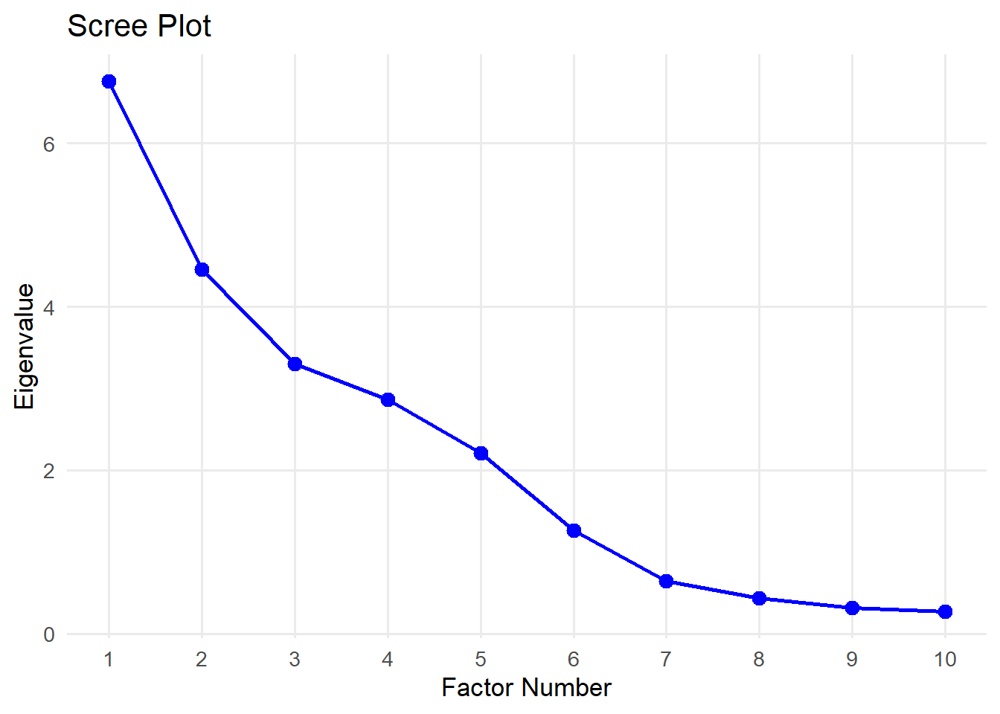
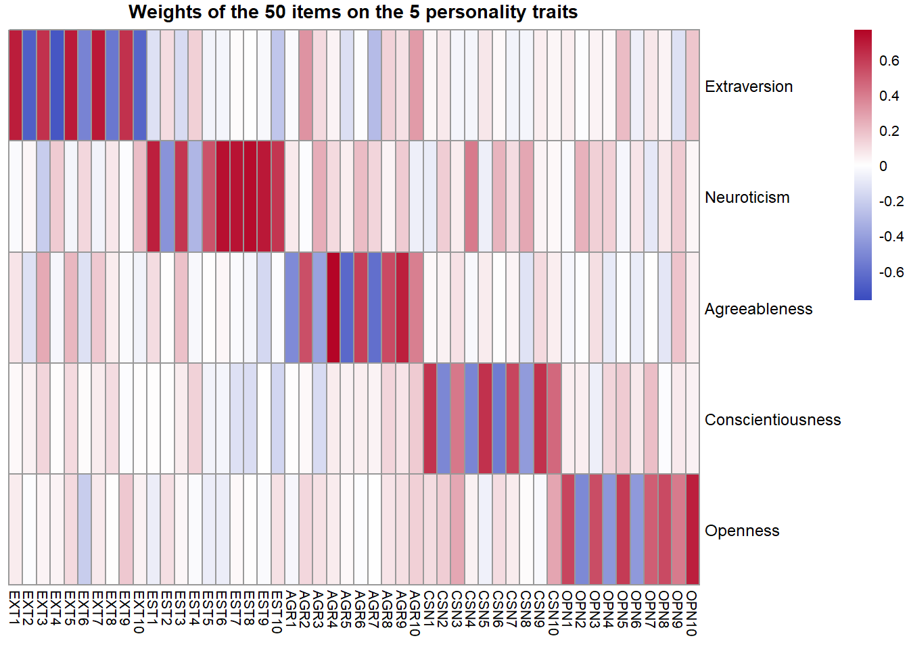
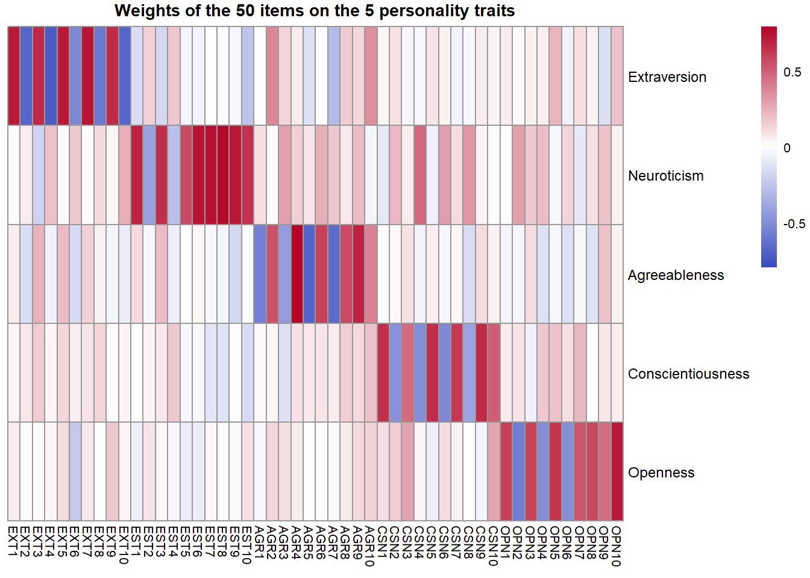
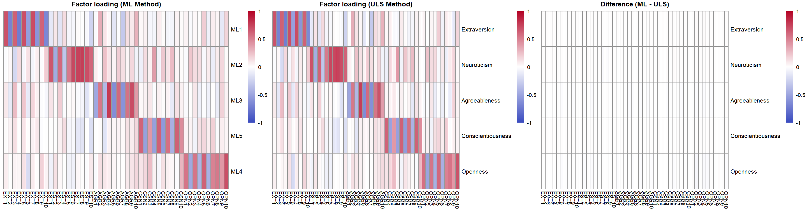
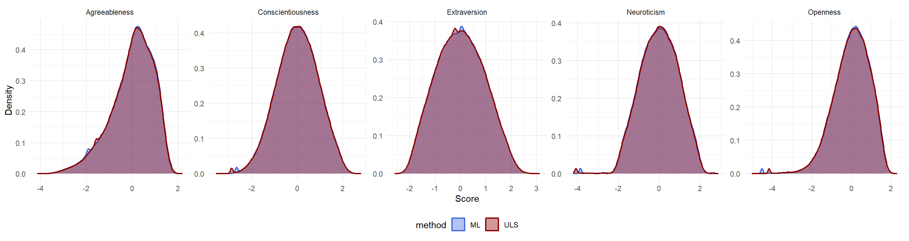
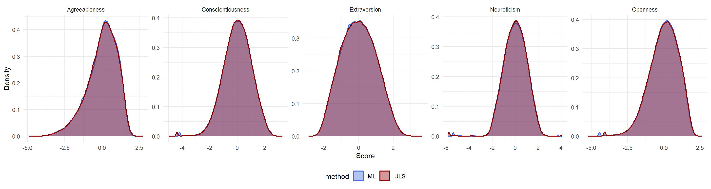
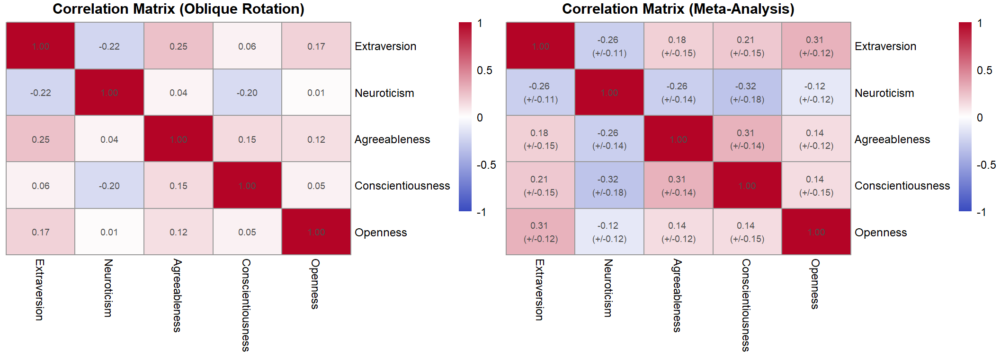
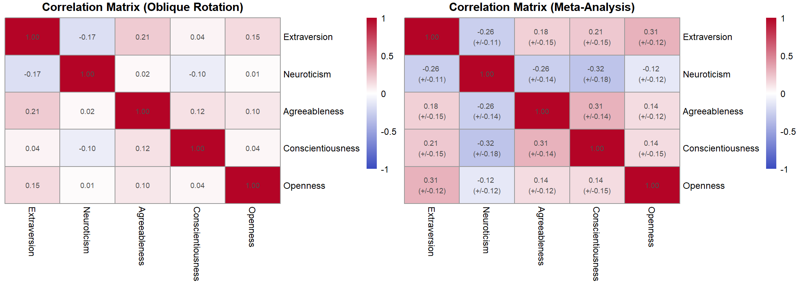
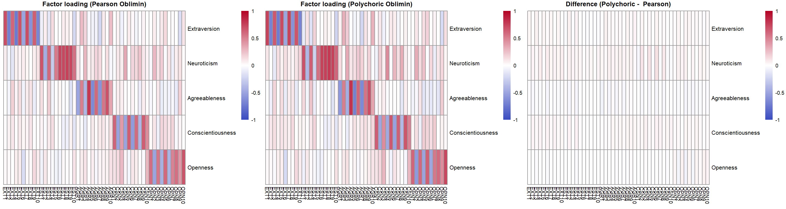
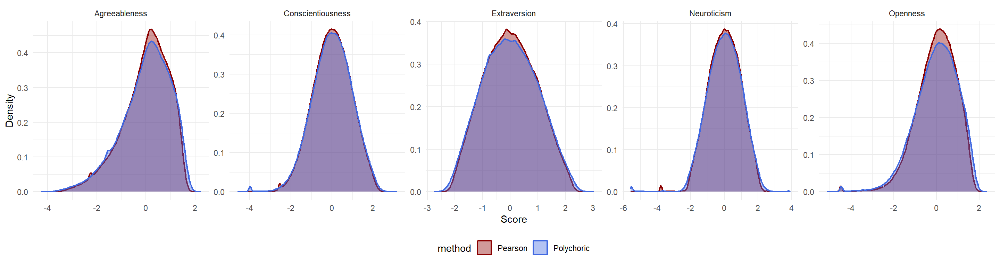

library(psych) # factor analysis, MAP criterion
library(ggplot2) # data visualisation
library(pheatmap) # heatmaps
library(tidyr) # data reshaping
library(dplyr) # data manipulation
library(gridExtra) # combining multiple plots
options(digits = 5)Factorial Analysis of IPIP Big Five Personality Data
Imports
Use install.packages("psych") to install the psych package. This package is used to perform factor analysis with the ULS (minimum residual) method as well as maximum likelihood, and also provides the MAP test via VSS(). At the time of writing, the latest version of psych is 2.6.3.
Data Cleaning
data_raw <- read.csv("./IPIP-FFM-data-8Nov2018/data-final.csv", sep = "\t", na.strings = c("", " ", "NaN", "NA","NULL"))# Select columns to only keep the 50 items that measure the 5 personality traits.
# See codebook.txt for more details on all the columns.
data <- data_raw[, 1:50]
# Remove rows where IPC != 1, as these could be multiple submissions of the same person.
# The total number of rows in the original dataset is 1 015 341, and 696 845 after cleaning.
cat("Number of lines removed to avoid multiple submission:", sum(data_raw$IPC != 1), "\n")Number of lines removed to avoid multiple submission: 318496 data <- data[data_raw$IPC == 1, ]
# Remove rows with missing data
n_before <- nrow(data)
data <- data[complete.cases(data), ]
n_after <- nrow(data)
cat("Number of lines removed to avoid missing data:", n_before - n_after, "\n")Number of lines removed to avoid missing data: 1141 cat("Number of lines :", n_after)Number of lines : 695704data_mat <- as.matrix(data)
head(data) EXT1 EXT2 EXT3 EXT4 EXT5 EXT6 EXT7 EXT8 EXT9 EXT10 EST1 EST2 EST3 EST4 EST5
1 4 1 5 2 5 1 5 2 4 1 1 4 4 2 2
2 3 5 3 4 3 3 2 5 1 5 2 3 4 1 3
3 2 3 4 4 3 2 1 3 2 5 4 4 4 2 2
4 2 2 2 3 4 2 2 4 1 4 3 3 3 2 3
6 3 3 4 2 4 2 2 3 3 4 3 4 3 2 2
7 4 3 4 3 3 3 5 3 4 3 2 4 4 2 4
EST6 EST7 EST8 EST9 EST10 AGR1 AGR2 AGR3 AGR4 AGR5 AGR6 AGR7 AGR8 AGR9 AGR10
1 2 2 2 3 2 2 5 2 4 2 3 2 4 3 4
2 1 2 1 3 1 1 4 1 5 1 5 3 4 5 3
3 2 2 2 1 3 1 4 1 4 2 4 1 4 4 3
4 2 2 2 4 3 2 4 3 4 2 4 2 4 3 4
6 1 2 1 2 2 2 3 1 4 2 3 2 3 4 4
7 2 2 2 4 4 1 2 1 5 3 5 3 4 4 5
CSN1 CSN2 CSN3 CSN4 CSN5 CSN6 CSN7 CSN8 CSN9 CSN10 OPN1 OPN2 OPN3 OPN4 OPN5
1 3 4 3 2 2 4 4 2 4 4 5 1 4 1 4
2 3 2 5 3 3 1 3 3 5 3 1 2 4 2 3
3 4 2 2 2 3 3 4 2 4 2 5 1 2 1 4
4 2 4 4 4 1 2 2 3 1 4 4 2 5 2 3
6 3 2 4 1 3 2 4 3 4 3 5 1 5 1 3
7 3 2 4 2 1 4 4 2 2 5 5 2 4 3 4
OPN6 OPN7 OPN8 OPN9 OPN10
1 1 5 3 4 5
2 1 4 2 5 3
3 2 5 3 4 4
4 1 4 4 3 3
6 1 5 4 5 2
7 1 5 5 4 4Factor Analysis
We perform factor analysis on the data to reduce the dimensionality of the data. In psychological terms, it means finding the underlying fundamental personality traits that (partially) explain the responses to the questions.
Note on Rotation and Interfactorial Correlations
We apply factor analysis to the data, to extract the Big Five personality traits, with varimax rotation to make the traits more interpretable.
We could have used non-orthogonal rotation methods, like oblimin, which allow for correlated factors. It is commonly recommended to use oblique rotation in psychometric analysis, as said in Fabrigar et al. (https://doi.org/10.1037/1082-989X.4.3.272):
For many constructs examined in psychology (e.g., mental abilities, personality traits, attitudes), there is substantial theoretical and empirical basis for expecting these constructs (or dimensions of these constructs) to be correlated with one another. Therefore, oblique rotations provide a more accurate and realistic representation of how constructs are likely to be related to one another.
However, our goal here is not to explain the correlations between factors, but to perform clustering on the factors, and we fear that oblique rotation will deform the space in a way that will influence the clustering. Additionally, Costello and Osborne (https://doi.org/10.1037/1082-989X.4.3.272) suggest that orthogonal and oblique rotation often produce similar results, so we will not lose much interpretability by using varimax rotation. The results given in appendix B of this notebook agree with this statement.
Note on the Factor Analysis Extraction Method
psych::fa() with fm="minres" uses the ULS/minres method (also called the iterated principal factor method) to perform factor analysis, which does not assume that factors are normally distributed, contrary to the maximum likelihood method.
Since the assumption that factors follow a Gaussian distribution directly contradicts the assumption of the Gaussian mixture model we will use later, we think it is preferable to use the ULS method. However, this does not seem to bother Gerlach, M., Farb, B., Revelle, W. et al. (https://doi.org/10.1038/s41562-018-0419-z), who use the ML method before using GMM. For the sake of comparison, we also perform factor analysis with the ML method in appendix A of this notebook, and the results are very similar to those given by the ULS method.
How Many Factors to Extract?
A common method to determine the number of factors to extract is to look at the scree plot, which is a plot of the eigenvalues of the correlation matrix of the data. The eigenvalues represent the amount of variance explained by each factor. The scree plot shows a clear elbow at 5 factors, which suggests that we should extract 5 factors. This is consistent with the fact that we are trying to extract the Big Five personality traits.
# The ULS method has several names: minres, iterated principal factor method,
# or unweighted least squares method.
fa_result <- fa(data_mat, nfactors = 5, rotate = "varimax", fm = "minres")
data_fa <- as.data.frame(fa_result$scores)
# Eigenvalues of the original (unreduced) correlation matrix
eigenvalues <- fa_result$values
cat("Eigenvalues:", eigenvalues, "\n")Eigenvalues: 6.7614 4.4525 3.2979 2.8595 2.2039 1.2601 0.64355 0.43588 0.3154 0.26604 0.22265 0.22117 0.20119 0.16037 0.12921 0.10512 0.069966 0.051551 0.037409 0.020274 0.010005 -0.0046215 -0.016522 -0.039134 -0.045543 -0.062224 -0.065799 -0.072161 -0.086535 -0.09105 -0.094426 -0.10728 -0.10919 -0.115 -0.12087 -0.12987 -0.13785 -0.14575 -0.16161 -0.17332 -0.18188 -0.18685 -0.19091 -0.19986 -0.21106 -0.23031 -0.23966 -0.29398 -0.3181 -0.31857 # Plot the ten first eigenvalues in a scree plot
top_10_eigenvalues <- eigenvalues[1:10]
scree_df <- data.frame(factor = 1:10, eigenvalue = top_10_eigenvalues)
ggplot(scree_df, aes(x = factor, y = eigenvalue)) +
geom_line(color = "blue", linewidth = 1) +
geom_point(color = "blue", size = 3) +
scale_x_continuous(breaks = 1:10) +
labs(title = "Scree Plot", x = "Factor Number", y = "Eigenvalue") +
theme_minimal(base_size = 13) +
theme(panel.grid.minor = element_blank())
Looking at the scree plot, it is not clear that we should extract five factors; the solution with six factors also seems plausible.
# Run MAP and VSS test on the correlation matrix used internally by the factor analysis
n_of_factors_diagnostic <- VSS(data_mat, n = 10, plot = FALSE)
summary(n_of_factors_diagnostic)
Very Simple Structure
VSS complexity 1 achieves a maximimum of 0.64 with 6 factors
VSS complexity 2 achieves a maximimum of 0.78 with 5 factors
The Velicer MAP criterion achieves a minimum of 0.02 with 6 factors
# Plot the weights of the 50 items on the 5 personality traits as a heatmap.
# NOTE: The factor order below is inferred by inspecting which group of items
# loads most strongly on each factor (see the loading heatmap).
trait_names <- c("Extraversion", "Neuroticism", "Agreeableness",
"Conscientiousness", "Openness")
# fa$loadings is items × factors; transpose to get traits × items
weights <- t(as.matrix(fa_result$loadings))
rownames(weights) <- trait_names
coolwarm <- colorRampPalette(c("#3B4CC0", "white", "#B40426"))(200)
lim <- max(abs(weights))
breaks <- seq(-lim, lim, length.out = 201)
pheatmap(
weights,
color = coolwarm,
breaks = breaks,
cluster_rows = FALSE,
cluster_cols = FALSE,
main = "Weights of the 50 items on the 5 personality traits",
fontsize = 8,
fontsize_row = 9
)
# From the previous plot, we can infer that factors are ordered as listed in trait_names.
# Assign the Big Five trait names as column names.
colnames(data_fa) <- trait_names
data_fa_long <- pivot_longer(data_fa, cols = everything(),
names_to = "trait", values_to = "score")
data_fa_long$trait <- factor(data_fa_long$trait)
ggplot(data_fa_long, aes(x = score)) +
geom_histogram(aes(y = after_stat(density)), bins = 60, alpha = 0.6, color = NA) +
geom_density(color = "darkred", linewidth = 0.8) +
facet_wrap(~trait, nrow = 1, scales = "free") +
theme_minimal(base_size = 11) +
labs(x = "Score", y = "Density")
Appendix A: Comparison of ULS vs ML Extraction Methods for Factor Analysis
# Perform factor analysis with the maximum likelihood (ML) method,
# for comparison with the ULS method.
fa_ml <- fa(data_mat, nfactors = 5, rotate = "varimax", fm = "ml",
scores = "regression")
data_fa_ml <- as.data.frame(fa_ml$scores)
colnames(data_fa_ml) <- trait_names
loadings_ml <- as.matrix(fa_ml$loadings)
weights_ml <- t(loadings_ml)
# Loading matrix comparison plots
breaks_full <- seq(-1, 1, length.out = 201)
p1 <- pheatmap(weights_ml, color = coolwarm, breaks = breaks_full,
cluster_rows = FALSE, cluster_cols = FALSE,
main = "Factor loading (ML Method)",
fontsize = 7, fontsize_row = 8, silent = TRUE)
p2 <- pheatmap(weights, color = coolwarm, breaks = breaks_full,
cluster_rows = FALSE, cluster_cols = FALSE,
main = "Factor loading (ULS Method)",
fontsize = 7, fontsize_row = 8, silent = TRUE)
diff_ml <- unclass(weights)- unclass(weights_ml) #unclass to avoid the rounding of "loadings" class
p3 <- pheatmap(diff_ml, color = coolwarm, breaks = breaks_full,
cluster_rows = FALSE, cluster_cols = FALSE,
main = "Difference (ML - ULS)",
fontsize = 7, fontsize_row = 8, silent = TRUE)
grid.arrange(p1$gtable, p2$gtable, p3$gtable, ncol = 3,
widths = c(1, 1, 1))
cat("Difference between the weights of the ML method and the ULS method:\n")Difference between the weights of the ML method and the ULS method:diff_ml EXT1 EXT2 EXT3 EXT4 EXT5
Extraversion 0.0043176 0.00344387 0.00399139 0.0025209 0.00068705
Neuroticism 0.0018195 0.00006655 0.00024917 0.0043874 0.00368028
Agreeableness -0.0064598 -0.00624621 -0.00487998 -0.0062293 -0.00214631
Conscientiousness 0.0015375 0.00389760 0.00229963 0.0056659 0.00168435
Openness -0.0097465 -0.00680624 -0.00920133 -0.0060747 -0.00516531
EXT6 EXT7 EXT8 EXT9 EXT10
Extraversion 0.0083713 -0.00090612 0.0007327 0.0099445 0.0095432
Neuroticism 0.0018538 0.00157184 0.0031312 0.0029989 0.0049162
Agreeableness -0.0109886 -0.00349126 -0.0011382 -0.0115519 -0.0061101
Conscientiousness 0.0038156 0.00154253 0.0038131 0.0030730 0.0059725
Openness -0.0118427 -0.00712393 -0.0052614 -0.0066742 -0.0071701
EST1 EST2 EST3 EST4 EST5
Extraversion -0.00069521 0.0092461 0.00142318 0.0084892 0.0030015
Neuroticism 0.01294162 0.0067824 0.01635914 0.0048091 0.0017928
Agreeableness 0.00348562 -0.0131960 -0.00031283 -0.0111778 -0.0042781
Conscientiousness 0.00092042 0.0066261 0.00549624 0.0021962 0.0012942
Openness 0.00237857 -0.0169595 0.00289511 -0.0153493 -0.0071810
EST6 EST7 EST8 EST9 EST10
Extraversion 0.00181924 -0.00389041 -0.00371214 0.00338234 -0.0046832
Neuroticism 0.00093443 -0.02130498 -0.01840249 0.00058658 0.0024758
Agreeableness -0.00137621 0.00052147 0.00050267 -0.00618603 0.0020708
Conscientiousness 0.00043380 0.00213690 0.00125177 0.00180212 0.0017459
Openness -0.00213632 -0.00337849 -0.00175053 -0.00160061 0.0068910
AGR1 AGR2 AGR3 AGR4 AGR5
Extraversion 0.00506402 1.7105e-03 0.0050252 0.0054541 0.0052128
Neuroticism -0.00096128 4.4914e-03 0.0035454 0.0045766 0.0023712
Agreeableness -0.00611410 -9.3707e-05 -0.0079475 -0.0115229 -0.0125017
Conscientiousness 0.00154177 2.9024e-03 0.0045056 0.0043916 0.0039887
Openness -0.01389798 -9.5569e-04 -0.0055728 -0.0030678 -0.0123788
AGR6 AGR7 AGR8 AGR9 AGR10
Extraversion 0.0053781 0.0054041 0.0031262 0.0074976 0.0031928
Neuroticism 0.0031810 0.0024426 0.0047224 0.0025905 0.0019540
Agreeableness -0.0090184 -0.0196692 -0.0030787 -0.0179086 -0.0064771
Conscientiousness 0.0041092 0.0056628 0.0055085 0.0050159 0.0053543
Openness -0.0095520 -0.0107374 -0.0065583 -0.0052303 -0.0136243
CSN1 CSN2 CSN3 CSN4 CSN5
Extraversion 0.0031456 0.0072082 0.0044130 0.0077000 0.00076135
Neuroticism -0.0015861 0.0130016 0.0039432 0.0121357 -0.00773553
Agreeableness -0.0024790 -0.0074310 -0.0058799 -0.0107143 -0.00306761
Conscientiousness 0.0016292 0.0117217 0.0068302 0.0051319 -0.00084633
Openness -0.0035333 -0.0066240 -0.0032117 -0.0066374 -0.00915995
CSN6 CSN7 CSN8 CSN9 CSN10
Extraversion 0.0076090 0.0026241 0.0056489 0.00317438 0.0048864
Neuroticism 0.0118759 0.0037242 0.0052289 0.00102169 0.0043739
Agreeableness -0.0077606 -0.0023042 -0.0112455 -0.00258980 -0.0025770
Conscientiousness 0.0081131 0.0028006 0.0086577 0.00086181 0.0079344
Openness -0.0103224 -0.0029411 -0.0091739 -0.00730207 -0.0065109
OPN1 OPN2 OPN3 OPN4 OPN5
Extraversion 0.0013855 0.0112772 0.00392140 0.0106595 0.0084252
Neuroticism 0.0066215 0.0096618 0.00147278 0.0068567 0.0041518
Agreeableness -0.0043259 -0.0116087 -0.00066217 -0.0135217 -0.0029235
Conscientiousness 0.0046492 0.0064508 0.00178626 0.0058747 0.0051179
Openness 0.0199852 -0.0304962 -0.00667356 -0.0246117 -0.0271744
OPN6 OPN7 OPN8 OPN9 OPN10
Extraversion 0.0028927 0.00398873 0.0014585 0.00231314 0.0058610
Neuroticism 0.0023482 0.00042565 0.0048527 0.00582187 0.0040722
Agreeableness -0.0108727 -0.00686017 -0.0051649 -0.00093680 0.0010968
Conscientiousness 0.0033427 0.00703795 0.0054406 0.00475866 0.0038951
Openness 0.0017959 -0.00261038 0.0178950 0.00070251 -0.0175780# Histogram comparison: ML vs ULS distributions for each trait
data_compare <- bind_rows(
pivot_longer(data_fa_ml, cols = everything(),
names_to = "trait", values_to = "score") %>%
mutate(method = "ML"),
pivot_longer(data_fa, cols = everything(),
names_to = "trait", values_to = "score") %>%
mutate(method = "ULS")
)
data_compare$trait <- factor(data_compare$trait)
ggplot(data_compare, aes(x = score, color = method, fill = method)) +
geom_density(alpha = 0.4, linewidth = 0.8) +
facet_wrap(~trait, nrow = 1, scales = "free") +
scale_fill_manual(values = c("ML" = "royalblue", "ULS" = "darkred")) +
scale_color_manual(values = c("ML" = "royalblue", "ULS" = "darkred")) +
theme_minimal(base_size = 11) +
theme(legend.position = "bottom") +
labs(x = "Score", y = "Density")
We can see that the loadings and distributions of the factors with the ULS method are very similar to those given by the factor analysis with the ML method, which suggests that the choice of extraction method does not have a strong influence on the results. However, we think it is preferable to use the ULS method, since it does not assume that factors are normally distributed, which is more consistent with the assumptions of the Gaussian mixture model we will use later.
Appendix B: Comparison of Varimax vs Oblimin Rotation Methods for Factor Analysis
In the main part of the notebook, we use orthogonal rotation (varimax) to make the factors more interpretable. However, we could have used oblique (oblimin) rotation, which allows for correlated factors. We will see that the results given by the oblimin rotation are very similar to those given by the varimax rotation, which suggests that the choice of rotation method does not have a strong influence on the results.
# Perform factor analysis with the oblimin rotation method,
# for comparison with the varimax rotation used above.
fa_obli <- fa(data_mat, nfactors = 5, rotate = "oblimin", fm = "minres",
scores = "regression")
data_fa_obli <- as.data.frame(fa_obli$scores)
loadings_obli <- as.matrix(fa_obli$loadings)
# From our (not shown) observations, factors are ordered as follows:
colnames(data_fa_obli) <- trait_names
weights_obli <- t(loadings_obli)
rownames(weights_obli) <- trait_names
# Loading matrix comparison plots
p_obli <- pheatmap(weights_obli, color = coolwarm, breaks = breaks_full,
cluster_rows = FALSE, cluster_cols = FALSE,
main = "Factor loading (Oblique Rotation)",
fontsize = 7, fontsize_row = 8, silent = TRUE)
p_vari <- pheatmap(weights, color = coolwarm, breaks = breaks_full,
cluster_rows = FALSE, cluster_cols = FALSE,
main = "Factor loading (Orthogonal Rotation)",
fontsize = 7, fontsize_row = 8, silent = TRUE)
diff_obli <- unclass(weights_obli) - unclass(weights)
p_diff <- pheatmap(diff_obli, color = coolwarm, breaks = breaks_full,
cluster_rows = FALSE, cluster_cols = FALSE,
main = "Difference (Oblique - Orthogonal)",
fontsize = 7, fontsize_row = 8, silent = TRUE)
grid.arrange(p_obli$gtable, p_vari$gtable, p_diff$gtable, ncol = 3,
widths = c(1, 1, 1))
cat("Difference between the weights of varimax and oblimin rotation:\n")Difference between the weights of varimax and oblimin rotation:diff_obli EXT1 EXT2 EXT3 EXT4 EXT5
Extraversion 0.0136975 -0.0125841 -0.020630 -0.0191826 -0.009356
Neuroticism 0.0873170 -0.0780909 0.071430 -0.0942861 0.081768
Agreeableness -0.0812138 0.0739422 -0.075745 0.0834205 -0.084347
Conscientiousness -0.0070415 0.0092797 -0.029037 0.0096655 -0.018957
Openness -0.0329142 0.0369946 -0.040565 0.0340853 -0.039356
EXT6 EXT7 EXT8 EXT9 EXT10
Extraversion 0.022386 0.0012316 -0.0261098 0.0109465 -0.012604
Neuroticism -0.047884 0.0846100 -0.0731802 0.0785326 -0.084257
Agreeableness 0.060468 -0.0830196 0.0632616 -0.0757960 0.075895
Conscientiousness 0.026155 -0.0146515 0.0017133 -0.0067537 0.013426
Openness 0.028145 -0.0378836 0.0234167 -0.0236033 0.032788
EST1 EST2 EST3 EST4 EST5
Extraversion 0.0394528 -3.9713e-02 0.01413814 -0.0111209 0.0430060
Neuroticism -0.0083669 4.9656e-05 -0.01919244 0.0310310 0.0025738
Agreeableness 0.0194071 -1.4244e-02 0.01955995 -0.0277619 0.0106480
Conscientiousness 0.0440372 -3.6899e-02 0.02985381 -0.0161861 0.0391199
Openness 0.0021087 -5.9281e-03 -0.00013982 -0.0044458 0.0030732
EST6 EST7 EST8 EST9 EST10 AGR1
Extraversion 0.0558948 0.0533889 0.0572260 0.06951180 0.025679 0.062673
Neuroticism 0.0070342 0.0045010 0.0029175 0.02439961 -0.042214 0.042420
Agreeableness 0.0100575 0.0076905 0.0105492 0.00037169 0.040348 -0.011835
Conscientiousness 0.0521475 0.0486539 0.0514435 0.05993640 0.035143 0.037703
Openness 0.0028025 0.0032799 0.0048110 0.01436276 0.013342 0.029190
AGR2 AGR3 AGR4 AGR5 AGR6 AGR7
Extraversion -0.0589280 0.057211 -0.082884 0.0672433 -0.050020 0.065634
Neuroticism -0.0044218 0.034269 -0.055336 0.0399232 -0.041647 0.017984
Agreeableness -0.0256992 -0.015088 0.013978 -0.0059947 0.015705 0.014295
Conscientiousness -0.0397981 0.035446 -0.043404 0.0436335 -0.021763 0.047966
Openness -0.0428288 0.018523 -0.043584 0.0437309 -0.031298 0.048935
AGR8 AGR9 AGR10 CSN1 CSN2
Extraversion -0.0615777 -0.0714414 -0.050439 -0.0181186 -0.0081525
Neuroticism -0.0188852 -0.0389376 0.016720 0.0577599 -0.0521233
Agreeableness -0.0090475 0.0028529 -0.037494 -0.0468037 0.0279775
Conscientiousness -0.0341385 -0.0360370 -0.033387 -0.0016737 -0.0093163
Openness -0.0343076 -0.0400375 -0.031737 0.0073490 -0.0098757
CSN3 CSN4 CSN5 CSN6 CSN7
Extraversion -0.0353523 0.0247932 -0.0015121 4.8320e-03 -0.0041697
Neuroticism 0.0169352 -0.0512477 0.0713054 -5.5517e-02 0.0475353
Agreeableness -0.0246123 0.0408326 -0.0504377 3.5862e-02 -0.0332259
Conscientiousness -0.0083518 0.0177483 0.0060220 -8.6262e-05 0.0121226
Openness 0.0060515 -0.0014335 0.0015959 -6.5998e-03 0.0094239
CSN8 CSN9 CSN10 OPN1 OPN2
Extraversion 0.0295818 -0.00448416 -0.0326675 -0.0561141 0.0720351
Neuroticism -0.0347156 0.06351082 0.0325299 -0.0144478 0.0349290
Agreeableness 0.0318755 -0.04582462 -0.0368301 -0.0170575 0.0039801
Conscientiousness 0.0181494 0.00801849 -0.0083965 -0.0279667 0.0446269
Openness 0.0045173 0.00059893 0.0060014 0.0074221 -0.0032440
OPN3 OPN4 OPN5 OPN6 OPN7
Extraversion -0.05733482 0.0687768 -0.0556503 0.0584483 -0.0555352
Neuroticism -0.03463054 0.0485977 0.0147294 0.0279289 0.0034560
Agreeableness -0.00303844 -0.0082622 -0.0426558 0.0063556 -0.0282907
Conscientiousness -0.02599138 0.0413571 -0.0293113 0.0346211 -0.0283473
Openness -0.00039595 0.0015792 0.0018071 0.0037013 0.0054315
OPN8 OPN9 OPN10
Extraversion -0.039943 -0.0567782 -0.06908584
Neuroticism -0.013887 -0.0422472 -0.01029807
Agreeableness -0.012796 0.0103423 -0.02976678
Conscientiousness -0.016972 -0.0204795 -0.03598869
Openness 0.011567 0.0019161 -0.00087099Correlation Between the Factors Obtained with the Oblimin Rotation
Unlike the factors obtained with the varimax rotation, the factors obtained with the oblimin rotation are correlated, as expected. However, the correlations between factors are not very strong, which suggests that the factors are still relatively independent from each other. This is consistent with the fact that the results given by the oblimin rotation are very similar to those given by the varimax rotation. We give here a comparison of the correlation matrix we found with the one given by Van der Linden et al. in their 2010 meta-analysis (https://doi.org/10.1016/j.jrp.2010.03.003).
# Correlation matrix of the 5 personality traits obtained with the oblique rotation
corr_obli <- cor(data_fa_obli)
# (Uncorrected) correlation matrix from the meta-analysis of Van der Linden et al. (2010)
corr_meta <- matrix(c(
1.00, -0.26, 0.18, 0.21, 0.31,
-0.26, 1.00, -0.26, -0.32, -0.12,
0.18, -0.26, 1.00, 0.31, 0.14,
0.21, -0.32, 0.31, 1.00, 0.14,
0.31, -0.12, 0.14, 0.14, 1.00
), nrow = 5, byrow = TRUE,
dimnames = list(trait_names, trait_names))
sd_meta <- matrix(c(
0.00, 0.11, 0.15, 0.15, 0.12,
0.11, 0.00, 0.14, 0.18, 0.12,
0.15, 0.14, 0.00, 0.14, 0.12,
0.15, 0.18, 0.14, 0.00, 0.15,
0.12, 0.12, 0.12, 0.15, 0.00
), nrow = 5, byrow = TRUE)
# Build annotation matrices
annot_obli <- matrix(sprintf("%.2f", corr_obli), nrow = 5,
dimnames = dimnames(corr_obli))
annot_meta <- matrix("", nrow = 5, ncol = 5, dimnames = dimnames(corr_meta))
for (i in 1:5) {
for (j in 1:5) {
if (i == j) {
annot_meta[i, j] <- sprintf("%.2f", corr_meta[i, j])
} else {
annot_meta[i, j] <- sprintf("%.2f \n(+/-%.2f)", corr_meta[i, j], sd_meta[i, j])
}
}
}
# Show the two correlation matrices side by side for comparison
p_corr_obli <- pheatmap(
corr_obli, color = coolwarm, breaks = breaks_full,
cluster_rows = FALSE, cluster_cols = FALSE,
display_numbers = annot_obli, number_format = "%.2f",
main = "Correlation Matrix (Oblique Rotation)",
fontsize = 9, silent = TRUE
)
p_corr_meta <- pheatmap(
corr_meta, color = coolwarm, breaks = breaks_full,
cluster_rows = FALSE, cluster_cols = FALSE,
display_numbers = annot_meta,
main = "Correlation Matrix (Meta-Analysis)",
fontsize = 9, silent = TRUE
)
grid.arrange(p_corr_obli$gtable, p_corr_meta$gtable, ncol = 2,
widths = c(1, 1))
# Histogram comparison: oblimin vs varimax distributions for each trait
data_compare_obli <- bind_rows(
pivot_longer(data_fa_obli, cols = everything(),
names_to = "trait", values_to = "score") %>%
mutate(method = "oblimin"),
pivot_longer(data_fa, cols = everything(),
names_to = "trait", values_to = "score") %>%
mutate(method = "varimax")
)
data_compare_obli$trait <- factor(data_compare_obli$trait)
ggplot(data_compare_obli, aes(x = score, color = method, fill = method)) +
geom_density(alpha = 0.4, linewidth = 0.8) +
facet_wrap(~trait, nrow = 1, scales = "free") +
scale_fill_manual(values = c("oblimin" = "royalblue", "varimax" = "darkred")) +
scale_color_manual(values = c("oblimin" = "royalblue", "varimax" = "darkred")) +
theme_minimal(base_size = 11) +
theme(legend.position = "bottom") +
labs(x = "Score", y = "Density")
Appendix C: Pearson vs polychoric matrix for factor extraction
In the previous sections of this notebook, factor extraction was performed using the standard Pearson correlation matrix. However, the dataset consists of responses measured on a 5-point Likert scale, which are inherently ordinal variables.
To ensure the robustness of our results, this appendix compares the standard approach with an analysis based on polychoric correlations. The polychoric correlation is specifically designed to estimate the relationship between latent continuous variables that have been transformed into ordered categories.
The methodological importance of this choice is highlighted by Holgado–Tello et al (https://doi.org/10.1007/s11135-008-9190-y ). The authors demonstrate that when data are ordinal, polychoric correlations provide a more accurate and stable reproduction of the original factor structure compared to Pearson correlations, which can lead to biased loadings and incorrect factor counts.
# Perform factor analysis with the oblimin rotation method using POLYCHORIC correlations.
# NOTE: Computing polychoric correlations on large datasets is computationally heavy.
fa_poly <- fa(data_mat, nfactors = 5, rotate = "oblimin", fm = "minres",
cor = "poly", scores = "regression")
data_fa_poly <- as.data.frame(fa_poly$scores)
loadings_poly <- as.matrix(fa_poly$loadings)
# Exchange column to properly match with traits
data_fa_poly <- data_fa_poly[, c(1, 2, 3, 5, 4)]
loadings_poly <- loadings_poly[, c(1, 2, 3, 5, 4)]
# Apply the trait names to the columns and rows
# (Assuming the factor extraction order remains the same as Pearson oblimin)
colnames(data_fa_poly) <- trait_names
weights_poly <- t(loadings_poly)
rownames(weights_poly) <- trait_names
# Loading matrix comparison plots
p_obli <- pheatmap(weights_obli, color = coolwarm, breaks = breaks_full,
cluster_rows = FALSE, cluster_cols = FALSE,
main = "Factor loading (Pearson Oblimin)",
fontsize = 7, fontsize_row = 8, silent = TRUE)
p_poly <- pheatmap(weights_poly, color = coolwarm, breaks = breaks_full,
cluster_rows = FALSE, cluster_cols = FALSE,
main = "Factor loading (Polychoric Oblimin)",
fontsize = 7, fontsize_row = 8, silent = TRUE)
# Calculate difference using unclass() to prevent the "loadings" rounding issue
diff_poly <- unclass(weights_poly) - unclass(weights_obli)
p_diff <- pheatmap(diff_poly, color = coolwarm, breaks = breaks_full,
cluster_rows = FALSE, cluster_cols = FALSE,
main = "Difference (Polychoric - Pearson)",
fontsize = 7, fontsize_row = 8, silent = TRUE)
grid.arrange(p_obli$gtable, p_poly$gtable, p_diff$gtable, ncol = 3,
widths = c(1, 1, 1))
cat("Difference between the weights of Polychoric and Pearson:\n")Difference between the weights of Polychoric and Pearson:print(round(diff_poly, 5)) EXT1 EXT2 EXT3 EXT4 EXT5 EXT6
Extraversion 0.03821 0.01353 0.05078 0.01124 0.03575 0.01477
Neuroticism 0.02216 0.04899 0.02120 0.06035 0.01291 0.06064
Agreeableness -0.01393 -0.03491 -0.01709 -0.02980 -0.00337 -0.04044
Conscientiousness 0.01366 0.04035 0.02385 0.04126 0.01364 0.04296
Openness -0.00442 -0.00348 -0.01631 -0.00386 -0.00368 -0.02539
EXT7 EXT8 EXT9 EXT10 EST1 EST2
Extraversion 0.03761 -0.00157 0.03956 -0.00894 -0.02693 0.05490
Neuroticism 0.03119 0.04886 0.03559 0.06405 0.00771 0.05836
Agreeableness -0.00950 -0.01963 -0.02178 -0.02829 0.01790 -0.04935
Conscientiousness 0.02286 0.04035 0.02154 0.03798 -0.01061 0.04666
Openness -0.00561 -0.00869 0.00421 -0.00295 -0.00531 -0.00854
EST3 EST4 EST5 EST6 EST7 EST8
Extraversion -0.02878 0.04676 0.00154 -0.01536 -0.01042 -0.01305
Neuroticism 0.04215 0.03787 0.03804 0.01265 0.02712 0.03001
Agreeableness 0.02760 -0.04014 -0.00588 0.00961 0.00285 0.00606
Conscientiousness 0.00285 0.04048 0.01264 -0.00159 0.00407 0.00253
Openness 0.00148 -0.01696 -0.00938 -0.00865 -0.00333 -0.00141
EST9 EST10 AGR1 AGR2 AGR3 AGR4 AGR5
Extraversion -0.01462 -0.01727 0.01510 0.05161 0.02387 0.02900 0.01111
Neuroticism 0.01741 0.04105 0.03144 0.02869 0.05867 0.04785 0.03130
Agreeableness -0.00054 0.00480 -0.06951 0.01138 -0.04035 0.02096 -0.04868
Conscientiousness 0.00358 0.00606 0.01980 0.01496 0.01825 0.03246 0.02609
Openness -0.00532 0.00730 0.00302 0.00442 0.00456 0.00338 -0.01415
AGR6 AGR7 AGR8 AGR9 AGR10 CSN1 CSN2
Extraversion 0.02586 0.00391 0.03276 0.02959 0.04814 0.00565 0.03697
Neuroticism 0.05388 0.04023 0.03432 0.05235 0.02485 -0.04054 0.10244
Agreeableness 0.01219 -0.04482 0.01231 0.01127 0.00072 -0.00943 -0.03408
Conscientiousness 0.03359 0.02846 0.03409 0.03411 0.03424 0.02694 0.03679
Openness -0.00645 -0.01733 -0.01006 0.01529 -0.00727 -0.00962 0.00707
CSN3 CSN4 CSN5 CSN6 CSN7 CSN8
Extraversion 0.00171 0.02456 0.00972 0.03741 -0.00129 0.02808
Neuroticism -0.01178 0.10128 -0.02961 0.11807 -0.02506 0.08967
Agreeableness 0.00538 -0.03134 -0.00076 -0.03970 -0.00449 -0.03972
Conscientiousness 0.05488 0.02883 0.02634 0.04086 0.04957 0.02544
Openness 0.01780 -0.00317 -0.01648 0.00326 -0.01846 -0.00634
CSN9 CSN10 OPN1 OPN2 OPN3 OPN4 OPN5
Extraversion 0.00821 0.00817 0.01315 0.03034 0.00694 0.03856 0.03307
Neuroticism -0.02306 -0.02018 0.01208 0.05278 0.04476 0.05112 0.00669
Agreeableness -0.00033 -0.00769 -0.01695 -0.02684 0.00643 -0.04173 -0.02624
Conscientiousness 0.03040 0.04495 0.01635 0.02564 0.00954 0.03872 0.02942
Openness -0.01880 0.00664 0.03187 -0.05992 0.05077 -0.06226 0.03274
OPN6 OPN7 OPN8 OPN9 OPN10
Extraversion 0.02425 0.02572 0.01408 -0.02112 0.02578
Neuroticism 0.04932 -0.00583 0.03321 0.03248 0.02495
Agreeableness -0.04661 -0.02845 -0.02137 0.01632 -0.01016
Conscientiousness 0.02874 0.03637 0.02472 0.01032 0.01835
Openness -0.05535 0.03830 0.02443 0.05250 0.04567# Histogram comparison: Polychoric vs Pearson correlation matrix for factor analysis for each trait
data_compare_poly <- bind_rows(
pivot_longer(data_fa_poly, cols = everything(),
names_to = "trait", values_to = "score") %>%
mutate(method = "Polychoric"),
pivot_longer(data_fa_obli, cols = everything(),
names_to = "trait", values_to = "score") %>%
mutate(method = "Pearson")
)
# Convert trait to factor to control facet order if needed
data_compare_poly$trait <- factor(data_compare_poly$trait)
ggplot(data_compare_poly, aes(x = score, color = method, fill = method)) +
geom_density(alpha = 0.4, linewidth = 0.8) +
facet_wrap(~trait, nrow = 1, scales = "free") +
scale_fill_manual(values = c("Polychoric" = "royalblue", "Pearson" = "darkred")) +
scale_color_manual(values = c("Polychoric" = "royalblue", "Pearson" = "darkred")) +
theme_minimal(base_size = 11) +
theme(legend.position = "bottom") +
labs(x = "Score", y = "Density")